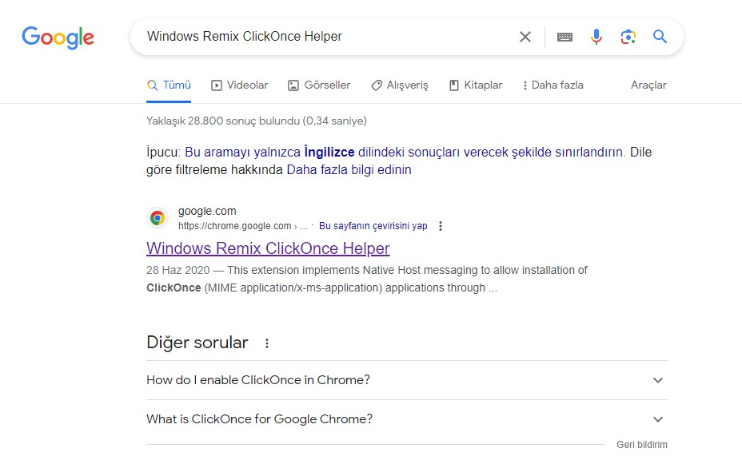
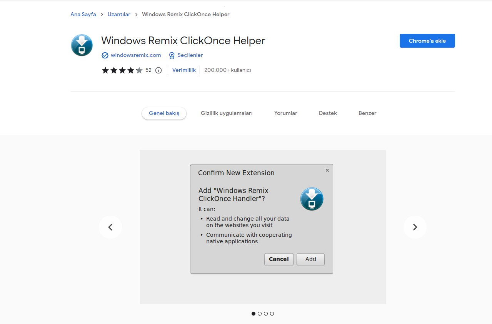
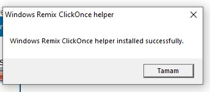

İlk defa veya süresi dolduğu için e-imza talebinde bulunmak istiyorsanız veya e-imza kurulumu yaptırmak istiyorsanız bu taleplerinizi bis.lokmanhekim.edu.tr adresinden gerçekleştirebilirsiniz.
Eğer talep oluşturmayı bilmiyorsanız buraya tıklayarak destek talebi oluşturma aşamalarına bakabilirsiniz.
E-imzanızı kullanmakta problem yaşıyorsanız şifre yazılacak ekranın gelmiyorsa aşşağıdaki adımları takip ediniz.
RESİMLİ ANLATIM
1- İlk olarak chorme uzantısı kurmamız gerekiyor bunun için google'a "Windows Remix ClickOnce Helper" yazıp çıkan ilk sayfaya tıklıyoruz
2- Gelen ekranda sağ üstteki "Chrome'a ekle" butonuna tıklıyoruz
 3- Gelen uyarı ekranında "Uzantı ekle" butonuna tıklayınız
4- Sol alt tarafa inen belgeye tıklyaınız karşınıza bir bildirim ekranı çıkarsa "OK" butonuna tıklayıp devam edin.
5- Son olarak karşınıza alttaki bildirim ekranı gelirse başarılı bir şekilde kurlum tamamlanmıştır

NOT: Kurulum sonrasında e imzayı kullanacağınız sayfayı yenileyerek tekrar deneyiniz. Problem yaşamaya devam ederseniz Destek Talebi oluştururak bilgi işlemden yardım talep edin.